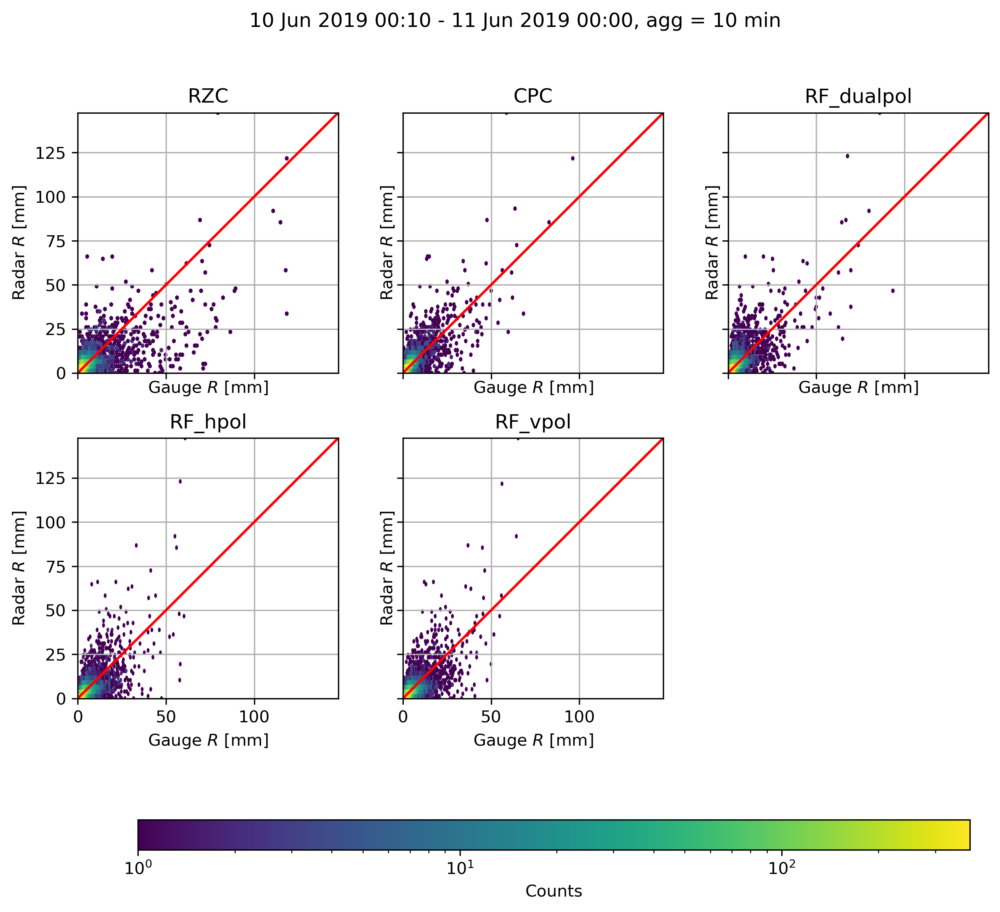
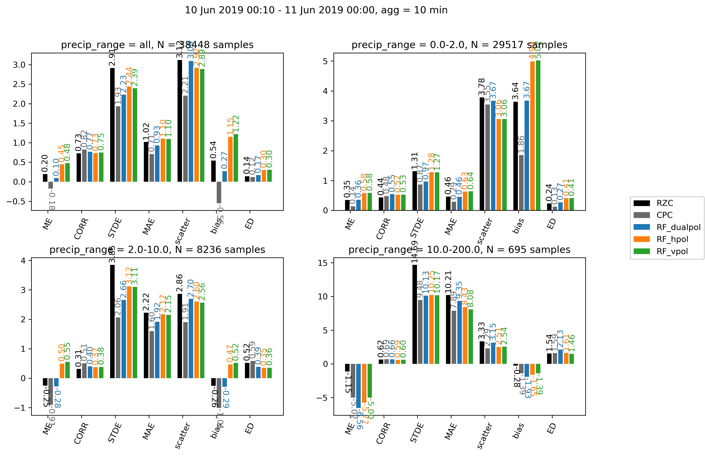

QPE command-line tools
The QPE submodule has three easy to use command-line tools
qpe_compute
Computes the QPE estimates using the randomForest algorithm for a given time interval outputting the results in the form of a standard 640 x 710 pixels Cartesian map. Currently the output is written in binary format without any metadata.
qpe_compute [options]
- Options:
- -h, --help
show this help message and exit
- -s START, --start=START
Specify the start time in the format YYYYddmmHHMM
- -e END, --end=END
Specify the end time in the format YYYYddmmHHMM
- -o OUTPUT, --output=OUTPUT
Path of the output folder, default is current folder
- -c CONFIG, --config=CONFIG
Path of the config file, the default will be default_config.yml in the qpe module
- -m MODELS, --models=MODELS
Specify which models you want to use in the form of a json line, the models must be in the folder /ml/rf_models/, for example ‘{“RF_dualpol”:”dualpol_model_BC_raw.p”}’, please note the double and single quotes, which are required
The files will be written in the output folder, and a subfolder will be created for every model passed with the -m flag. For example ‘{“RF_dualpol”:”dualpol_model_BC_raw.p”,”RF_hpol”:”hpol_model_BC_raw.p”’, will create two subfolders RF_dualpol and RF_hpol.
The configuration file must be written in YAML, the default file has the following structure:
TMP_FOLDER: '/scratch/wolfensb/'
KDP_PARAMETERS:
RMIN : 1000.
RMAX : 50000.
RCELL : 1000.
ZMIN : 20.
ZMAX : 40.
RWIND : 6000.
SNR_THRESHOLD: 3
ZH_THRESHOLD: 7
VISIB_CORR:
MIN_VISIB: 37
MAX_CORR: 2
SWEEPS: 'all'
RADARS: 'all'
# Post-processing
OUTLIER_REMOVAL: 1
GAUSSIAN_SIGMA: 0.5
ADVECTION_CORRECTION: 0
FILE_FORMAT: DN
The parameters are the following
TMP_FOLDER : A directory where to store intermediate files generated during the processing, this is not important and /tmp/ can be used as well
KDP_PARAMETERS : set of parameters used in the computation of KDP using the moving least-square method.
RMIN : minimum range where to look for continuous precipitation, see pyart code
RMAX : maximum range where to look for continuous precipitation, see pyart code
ZMIN : minimum reflectivity to consider it a rain cell, see pyart code
ZMAX : maximum reflectivity to consider it a rain cell, see pyart code
RWIND : size of the moving window in meters used in the PSIDP filtering and KDP estimation, see pyart code
SNR_THRESHOLD : minimum SNR in dB below which the radar data is masked
ZH_THRESHOLD : minimum ZH below which radar data is masked
VISIB_CORR : set of parameters for visibility correction
MIN_VISIB : minimum visibility below which the data is masked
MAX_CORR : maximum visibility correction for ZH (in linear)
SWEEPS : which radar sweeps (elevations) to use, e.g. [1,2,3,4] for the 4 first, ‘all’ uses all 20 sweeps
RADARS : which radars to consider, e.g. [‘A’,’D’], ‘all’ uses all five radars
OUTLIER_REMOVAL : if set to 1, a local outlier filtering will be applied (e.g. remove values with z-scores in 3 x 3 window above +3 or below -3)
GAUSSIAN_SIGMA : size in pixels of the Gaussian smoothing that is applied on the QPE product, if set to 0 no smoothing is used
ADVECTION_CORRECTION : if set to 1, the QPE will be corrected for advection using this method with two consecutive timesteps
FILE_FORMAT : the format of output files, either ‘float’, in this case it will be saved in binary format in float, ‘DN’, binary format but after conversion to bytes using the lookup table in constants.py SCALE_CPC or ‘DN_gif’, in gif format using the lookup table in constants.py SCALE_RGB
Warning
When defining the configuration file, it is highly advised to be consistent with the configuration file used to update the database, since the machine learning model will be trained on this particular setup. If you are not sure how you should setup these parameters always use the default file in /store/msrad/radar/rainforest/rainforest/qpe/default_config.yml.
Example
qpe_compute -s 201806112000 -e 201806112200 -m '{"RF_dualpol":"dualpol_model_BC_spline.p"}' -o /scratch/wolfensb/qpe_runs/20180611
qpe_plot
Plots a series of QPE realizations stored in different subfolders within a main folder (as given by qpe_compute), using a custom colorscale, where low precipitation intensities are displayed in linear scale and high precipitation intensities in logarithmic scale.
qpe_plot [options]
- Options:
- -h, --help
show this help message and exit
- -i INPUT, --inputfolder=INPUT
Path of the input folder
- -o OUTPUT, --outputfolder=OUTPUT
Path of the output folder
- -s START, --start=START
Specify the start time in the format YYYYddmmHHMM, optional: if not provided entire timerange in input folder will be plotted
- -e END, --end=END
Specify the end time in the format YYYYddmmHHMM, optional: if not provided entire timerange in input folder will be plotted
- -S SHAPEFILE, --shapefile=SHAPEFILE
Whether or not to overlay the shapefile of swiss borders, default is True
- -f FIGSIZE, --figsize=FIGSIZE
Size of figure width,height in inches, e.g. 5,10, default is automatically chosen depending on how many QPE fields are to be plotted
- -x XLIM, --xlim=XLIM
Limits in the west-east direction, in Swiss coordinates, e.g. 100,300, default is 400,900
- -c CBAR, --cbar=CBAR
Orientation of the colorbar, either ‘vertical’ or ‘horizontal’, default is ‘horizontal’
- -y YLIM, --ylim=YLIM
Limits in the south-north direction, in Swiss coordinates, e.g. 500,700, default is 0,350
- -d DISPLAY, --display=DISPLAY
Specify how you want to display the QPE subplots as a comma separated string, e.g 2,1 will put them on 2 rows, one column. Default is to put them in one row
- -t TRANSITION, --transition=TRANSITION
Precipitation intensity at which the colormap changes (purple for lower intensities, rainbow for larger intensities), default is 10
- -v VMIN, --vmin=VMIN
Minimum precip. intensity to display, default = 0.04
- -V VMAX, --vmax=VMAX
Maximum precip. intensity to display, default = 120
- -m MODELS, --models=MODELS
Specify which models (i.e. subfolders in the qpefolder you want to use, default is to use all available, must be comma separated and put into quotes, e.g. ‘dualpol,hpol,RZC’
Example
qpe_plot -i '/scratch/wolfensb/qpe_runs/20190610/' -o '/scratch/wolfensb/' -V 50 -t 3 -d '1,2' -m 'RZC,CPC'
qpe_evaluation
Plots a series of evaluation scores using gauge as reference for all QPE realizations stored in different subfolders within a main folder (as given by qpe_compute).
 {kind=link}
{kind=link}
qpe_evaluation [options]
- Options:
- -h, --help
show this help message and exit
- -q QPEFOLDER, --qpefolder=QPEFOLDER
Path of the folder where QPE data is stored
- -g GAUGEFOLDER, --gaugepattern=GAUGEFOLDER
Path pattern (with wildcards) of the gauge data (from database) to be used, default = ‘/store/msrad/radar/radar_database/gauge/*.csv.gz’, IMPORTANT you have to put this statement into quotes (due to wildcard)!
- -o OUTPUT, --output=OUTPUT
Path of the output folder
- -s START, --start=START
Specify the start time in the format YYYYddmmHHMM, optional: if not provided entire timerange in qpe folder will be used
- -e END, --end=END
Specify the end time in the format YYYYddmmHHMM, optional: if not provided entire timerange in qpe folder will be used
- -b b10, --b10=b10
Specify which precipitation ranges you want to use at the 10 min resolution, as a comma separated string, e.g. 0,1,10,200 will separate the results, in the ranges [0,1),[1,10),[10,200(
- -B END, --b60=END
Specify which precipitation ranges you want to use at the 60 min resolution, as a comma separated string, e.g. 0,1,10,200 will separate the results, in the ranges [0,2),[2,10),[10,200(
- -m MODELS, --models=MODELS
Specify which models (i.e. subfolders in the qpefolder you want to use, default is to use all available, must be comma separated and put into quotes, e.g. ‘dualpol,hpol,RZC’
Example
qpe_evaluation -q /scratch/wolfensb/qpe_runs/20190806 -g '/store/msrad/radar/radar_database/gauge/*.csv.gz' -o /scratch/wolfensb/qpe_runs/plots_allstats -m "RZC, CPC, RF_dualpol, RF_hpol, RF_vpol"